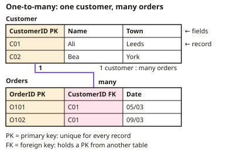

GCSE Computer Science · Topic 14
Topic 5 Databases and impacts of technology
Databases and the impacts of technology covers how organisations store data, and the legal, ethical and environmental issues computing raises.
We will design relational databases with keys and relationships, and use S Q L to query, change and join tables.
Then we study U K computing law, software licences, environmental impacts, and case studies on privacy, artificial intelligence and the digital divide.
- 7 subtopics
- 202 questions
- Free: 14.1 notes and 10 questions
In this topic
- 14.1Tables, fields, records, primary and foreign keys, and entity relationshipsFree below · 28 questions
- 14.2SQL queries: SELECT, FROM, WHERE, ORDER BY and wildcardsOpen in Full Marks · 21 questions
- 14.3SQL data changes and joins: INSERT, UPDATE, DELETE and linking tablesOpen in Full Marks · 19 questions
- 14.4UK legislation: Data Protection Act 2018, Computer Misuse Act 1990, Copyright, Designs and Patents Act 1988Open in Full Marks · 30 questions
- 14.5Software licensing: open source and proprietaryOpen in Full Marks · 33 questions
- 14.6Environmental impacts: energy use, e-waste and sustainable technologyOpen in Full Marks · 32 questions
- 14.7Case studies: privacy and surveillance, AI and bias, autonomous vehicles, the digital divideOpen in Full Marks · 39 questions
14.1 · Free notes
Tables, fields, records, primary and foreign keys, and entity relationships

Key points
- A relational database stores data in several linked tables rather than one large flat file. This reduces repeated data and keeps the data consistent.
- A table holds data about one entity, which is a type of thing such as Student, Book or Order. Each entity has its own table.
- A field is a column (an attribute) with a field name and a data type, e.g. text/string, integer, real, Boolean or date/time. A record is a row holding all the data about one item.
- The number of data values in a table = fields × records. For example, 8 fields × 250 records = 2000 values. Field names are not counted as data.
- A primary key is a field whose value is unique for every record and never left blank. It identifies exactly one record, e.g. StudentID. Names are poor keys because two people can share one.
- A foreign key is a field in one table that is the primary key of another table. It creates the link between the two tables. Its values must match an existing primary key value, which is called referential integrity.
- A primary key value cannot repeat in its own table. A foreign key value can repeat, e.g. CustomerID appears in Orders once for every order a customer places.
- There are three types of relationship: one-to-one, one-to-many and many-to-many. One-to-many is the most common, e.g. one customer places many orders.
- In a one-to-many relationship the foreign key goes in the table on the 'many' side. So CustomerID is a foreign key in Orders.
- A many-to-many relationship (students and courses) cannot be stored directly. It is split into two one-to-many relationships using a link table that holds two foreign keys.
- An entity-relationship (ER) diagram shows entities as boxes and relationships as lines. The lines are labelled 1 and many, or drawn with a crow's foot.
- Relational databases reduce data redundancy because each fact is stored once and linked by keys. This also prevents inconsistent data, saves storage and improves data integrity.
In more detail
- Worked data values: a table with 6 fields and 250 records holds 6 × 250 = 1500 data values.
- Worked keys: Customer(CustomerID primary key, Name) and Order(OrderID primary key, CustomerID foreign key, Date) → one customer can have many orders.
- Worked many-to-many: Student and Course are linked through an Enrolment link table holding StudentID and CourseID as foreign keys.
- Worked redundancy: in a flat file, a customer's address repeated in 20 orders needs 20 edits if they move; a relational design stores it once.
Practice
Tables, fields, records, primary and foreign keys, and entity relationships: 10 questions
Pick an answer to check it, or open the answer for the explanation.
1. A school table Students has the columns StudentID, Name and Form. What is 'Name' called?
- A primary key
- A record
- A field
- A table
Show answer
C: A field. A field is a column in a table that holds one type of data about every item. A record is a whole row, such as all the details of one student.
2. In a Students table, all the details about one student are stored in a single row. What is this row called?
- An entity
- A field
- A record
- A foreign key
Show answer
C: A record. A record is a row holding all the data about one item (here, one student). The columns are fields.
3. What is the purpose of a primary key in a table?
- To uniquely identify each record
- To link the table to a second table
- To store the largest value in the table
- To sort the records alphabetically
Show answer
A: To uniquely identify each record. A primary key has a different value in every record, so it identifies exactly one record. Linking to another table is the job of a foreign key.
4. Book(BookID, Title, AuthorID) links to Author(AuthorID, Name), where AuthorID is unique. In Book, what is AuthorID?
- The primary key of Author only
- A foreign key
- A record
- A second primary key for Book
Show answer
B: A foreign key. AuthorID in Book matches the primary key of the Author table, so it is a foreign key. It creates the link between the two tables.
5. A table holds 1200 pupils. Why is Surname a poor choice of primary key?
- Two pupils may share a surname
- It is text, and keys must be numbers
- It can be changed by the teacher
- It is too long to store
Show answer
A: Two pupils may share a surname. A primary key must be unique for every record. Surnames can be repeated, so two pupils could not be told apart. Keys can be text, but they must be unique.
6. A teacher teaches many classes, but each class has only one teacher. What type of relationship is this?
- Zero-to-one
- One-to-one
- One-to-many
- Many-to-many
Show answer
C: One-to-many. One teacher is linked to many classes, and each class to one teacher. That is a one-to-many relationship.
7. Students can take many courses, and each course has many students. How is this stored in a relational database?
- Make StudentID the primary key of Course
- Put all course names in one Student field
- Use a link table holding two foreign keys
- Merge both tables into a flat file
Show answer
C: Use a link table holding two foreign keys. A many-to-many relationship is split into two one-to-many relationships using a link table. The link table holds foreign keys from both tables.
8. Which is an advantage of a relational database over a flat file?
- It reduces data redundancy
- It needs no primary keys
- It stores more copies of each fact
- It can only hold one table
Show answer
A: It reduces data redundancy. Each fact is stored once and linked using keys, so there is less duplicated data. This saves storage and makes updates easier.
9. In a flat file a customer's address is repeated in every order. The customer moves, but only some records are changed. What problem is this?
- Data encryption
- Data compression
- Data validation
- Data inconsistency
Show answer
D: Data inconsistency. The same fact is held in several places with different values, so the data is inconsistent. A relational database stores the address once.
10. A table has 8 fields and 250 records. How many data values does it hold, not counting the field names?
- 2000
- 250
- 258
- 8
Show answer
A: 2000. The number of values = fields × records = 8 × 250 = 2000. The 8 field names are headings, not data.
Keep going in Full Marks
Full Marks has 28 questions on Tables, fields, records, primary and foreign keys, and entity relationships (18 more than here), set out in practice levels. You also get notes and 3D models for all 7 subtopics of Topic 5 Databases and impacts of technology, plus games, timed exams and past papers.